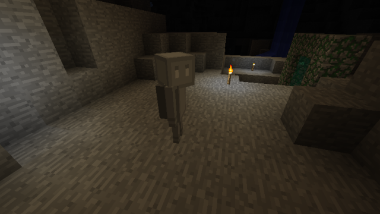
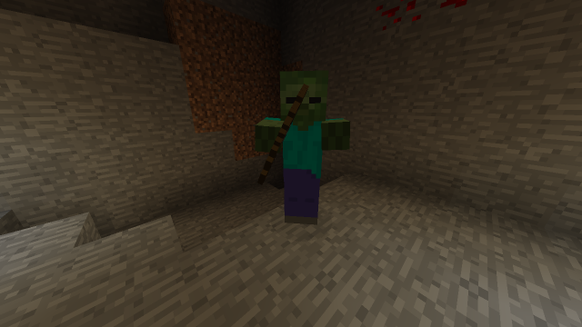
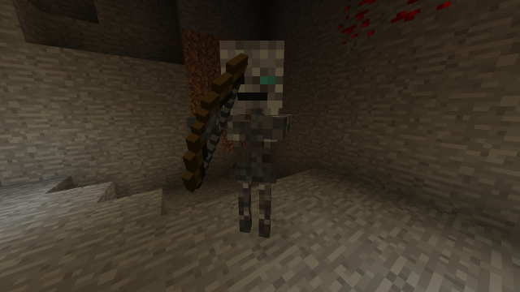
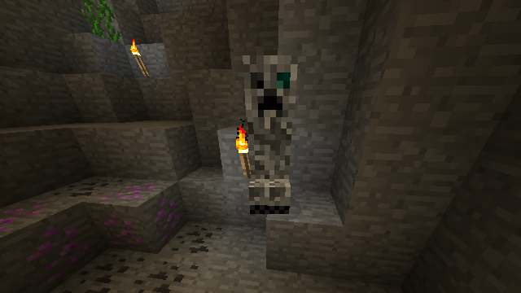
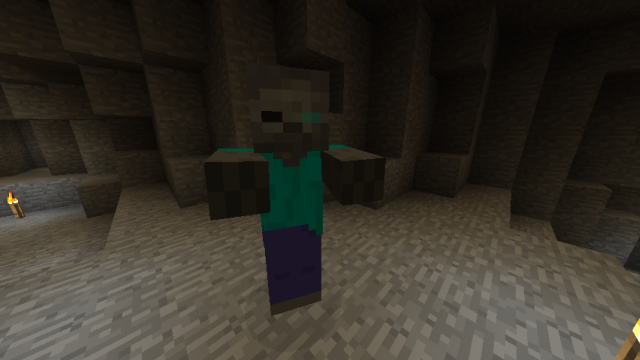
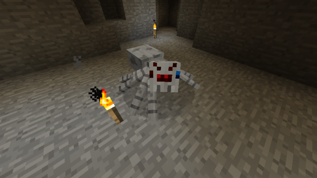

Caveworldのマスコットモブことケイブマンです。

洞窟ディメンションの光レベル7以下の暗所で不透過ブロックの上に単体でスポーンします。
ハート15個分です。
周囲のドロップを発見すると、即座に回収する習性があります。
ケイブマンが手に剣やツールを持っているときは、近くのプレイヤーを攻撃してきます。
ケイブニウムを与えてケイブマンの機嫌を良くすると、リュックの中身を見せてくれます。
弓を持ったゾンビです。

洞窟ディメンションの光レベル7以下の暗所で不透過ブロックの上にスポーンします。
ゾンビと同じくハート10個分です。
弓を使って矢による遠距離攻撃を仕掛けてきます。
しかし、スケルトンほど矢の命中精度は安定せず、当たったり当たらなかったりします。
スケルトンの亜種です。

Cavern以外の洞窟ディメンションの光レベル7以下の暗所で不透過ブロックの上にスポーンします。
ハート25～35個分です。個体により、範囲内で変動します。
普通のスケルトンと同じく、骨や弓などをドロップします。
それに加えて、ケイブニウムまたは上質なケイブニウムを1個ドロップします。
ケイブニックボウを持ったケイブニックスケルトンは、確実にケイブニックボウをドロップします。
プレイヤーが半径8ブロック以内に入ると弓を使って矢による遠距離攻撃を仕掛けてきます。
連射スピードは非常に早く、容易に近づくことはできません。
ケイブニックスケルトンの長で、ボスモンスターです。
ケイブニックスケルトンより少し大きめで、目が赤いのが特徴です。
ケイブニックスケルトンがスポーンする際に、低確率でスポーンします。
ハート100～200個分です。個体により、範囲内で変動します。
普通のスケルトンと同じく、骨や弓などをドロップします。
それに加えて、上質なケイブニウムを15～25個と、ケイブニックボウをドロップします。
プレイヤーが半径16ブロック以内に入ると弓を使って矢による遠距離攻撃を仕掛けてきます。
連射スピードは非常に早く、容易に近づくことはできません。
クリーパーの亜種です。

Cavern以外の洞窟ディメンションの光レベル7以下の暗所で不透過ブロックの上にスポーンします。
ハート15～25個分です。個体により、範囲内で変動します。
普通のクリーパーのドロップに加えて、ケイブニウムまたは上質なケイブニウムを1個ドロップします。
プレイヤーが近くにいると爆発による特攻攻撃をかけてきます。
普通のクリーパーよりも早く爆発し、威力も少し高めです。
ケイブニッククリーパーの長で、ボスモンスターです。目が赤いのが特徴です。
ケイブニッククリーパーがスポーンする際に、低確率でスポーンします。
ハート50～100個分です。個体により、範囲内で変動します。
普通のクリーパーのドロップに加えて、上質なケイブニウムを15～25個をドロップします。
プレイヤーが近くにいると爆発による特攻攻撃をかけてきます。
ケイブニッククリーパーと違い、爆発までの猶予時間は長めですが、爆発の威力は非常に高いです。
ゾンビの亜種です。

Cavern以外の洞窟ディメンションの光レベル7以下の暗所で不透過ブロックの上にスポーンします。
ハート25～35個分です。個体により、範囲内で変動します。
普通のゾンビのドロップに加えて、ケイブニウムまたは上質なケイブニウムを1個ドロップします。
普通のゾンビと同じように、プレイヤーに接近し攻撃します。攻撃力は高めです。
クモの亜種です。

Cavern以外の洞窟ディメンションの光レベル7以下の暗所で不透過ブロックの上にスポーンします。
ハート10～15個分です。個体により、範囲内で変動します。
普通のクモのドロップに加えて、ケイブニウムまたは上質なケイブニウムを1個ドロップします。
普通のクモと同じように、プレイヤーに接近し攻撃します。
攻撃を受けたプレイヤーには、視界が狭まるステータス効果が数秒間付与されます。